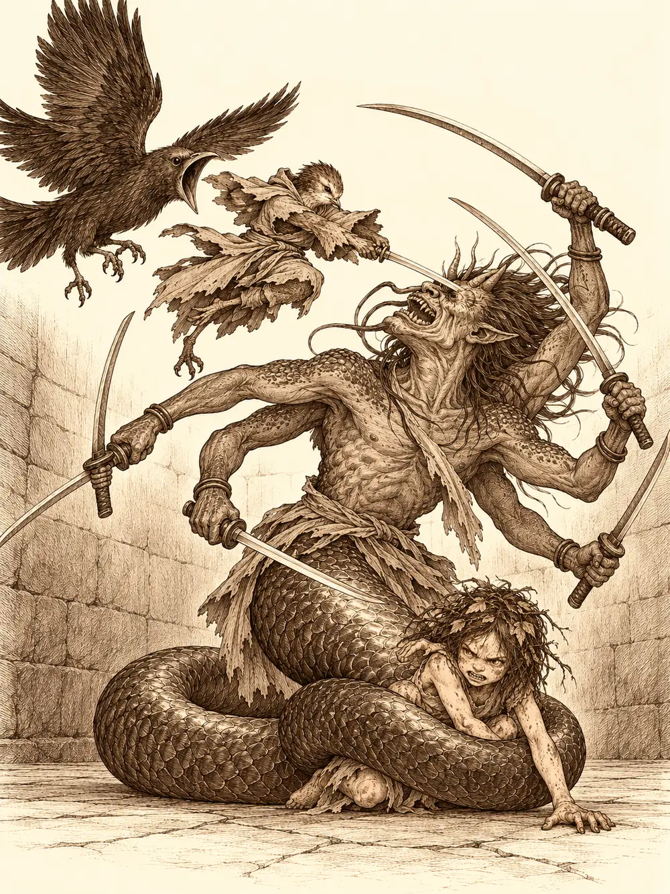

Capítulo 143
Nox
Libro IX · Mareas y muertos
La taberna olía a arroz, a pescado frito y a sake caliente, pero Arwen, que tenía la nariz de un perro de caza, encontró entre todos aquellos olores dos que no conocía. El primero estaba sentado a una mesa: un hombre que solo llevaba unos pantalones, con plumas en la cabeza, el cuerpo pintado de marcas blancas, un arco a la espalda y un hacha al cinto. Tocaba los vasos como si no supiera para qué servían y olía el sushi antes de atreverse a probarlo.
"Tú ser rara", le dijo a la niña.
"Yo no ser rara. Yo ser Arwen".
El hombre le contó que tenía un amigo pájaro, muy grande, y que un día había aparecido allí de repente y el pájaro no estaba. Arwen entendía muy bien eso de aparecer de repente en un sitio. Le dijo que seguro que su amigo andaba por ahí y le señaló una dirección al azar. El hombre salió disparado a una velocidad que nadie había visto nunca en unas piernas humanas y desapareció por la puerta.
El segundo olor estaba mucho más cerca. Arwen lo siguió entre las mesas, saltó sobre una cama de las habitaciones del fondo, se comió el plato que el hombre emplumado había dejado a medias y por fin lo encontró pegado a la pared: una criatura pequeña, con pico y un cuerpo que no se sabía si estaba cubierto de hojas o de plumas, que estaba metiendo la mano en el bolsillo de un cliente, en total silencio. Acababa de sacarle siete monedas. Arwen le tocó el pico con un dedo.
"¿Son hojas o son plumas?".
La criatura se dejó examinar. Cuando Arwen le encontró un bichito entre el plumaje y se lo comió, le dedicó una sonrisa a la que todavía se le movían las patas de un insecto. Se llamaba Chanclick, aunque esa misma tarde ya todos la llamaban Channi.
"Ven, ven, ven. Te presento a mis amigos. Los mayores siempre me pagan la comida".
Banzo y Jin vieron llegar a la niña con aquella cosa rara con sombrero. El goliat bajó la cabeza con un suspiro. A ver lo que había traído del bosque esta vez. Pidieron otro cuenco y Channi imitó a Arwen y comió con las dos manos, como una gallina. Cuando Banzo le preguntó de dónde venía, contestó que de muy lejos, de un sitio de plantas muy grandes, más grandes que ella. Se había perdido. Arwen le explicó que su casa también estaba llena de animales raros, y que tenían que ir juntas, con Shizuka, a subir a los árboles y tirarse desde arriba.
Banzo tenía otra cosa que hacer aquel día. Desde que había perdido la mano, sus armas se le habían quedado grandes, y fue a la herrería a buscar algo que pudiera manejar con una sola. Le gustó una espada larga. Jin lo convenció de cambiarla por una lanza mejorada, que se manejaba mejor con un brazo, y pagó él. El herrero dijo una cifra, luego otra, y al final fueron veinticinco monedas. Banzo vendió las armas que le sobraban y salió con la lanza al hombro, todavía torpe con ella.
En la calle vieron a un guardia que arrastraba a un hombre hacia las celdas. Estaba consumido, con los pómulos hundidos, la piel llena de costras y un brazo negro e hinchado, podrido desde el codo. Tocaba a todo el que pasaba, pidiendo algo que no lograba decir. El guardia explicó que en los barrios bajos había muchos así, que eran una escoria, y que este se había metido en el barrio medio a molestar a la gente. Cuando el hombre alargó la mano hacia Arwen, la niña le mordió. Él, al apartarse, le rozó la cara a Jin.
"Ponlo en una celda aislada", dijo Banzo. "La más alejada que tengas. Y en cuanto lo dejes, avisa a la shogun".
Bajaron a los barrios bajos. En una taberna, el tabernero acababa de echar a otro enfermo, que se había derrumbado sobre unos barriles echando espuma por la boca. No sabía nada, o no quiso decir nada. Arwen se acercó al moribundo con unas hierbas masticadas, decidida a curarle, y ya iba a ponérselas cuando una voz la detuvo.
"Pequeña, yo no haría eso. Mejor no lo toques".
Era Tiari. La niña corrió a abrazarla y la jefa de los bajos fondos le dio una bolsa de caramelos. Les contó que buscaba al que vendía una droga nueva, muy peligrosa, y contagiosa. Ya que los cazadores no bajaban a ayudar a los barrios bajos, dijo, alguien tenía que hacerlo. Banzo le aseguró, con una reverencia, que iban precisamente a pedirle permiso; ella sonrió, porque no le creyó, y le dijo que últimamente recibía visitas de varios cazadores, incluso de la propia shogun.
Arwen se sentó en el suelo de golpe. Estaba cansada, le pesaba todo, y cuando abrió la boca tenía las encías negras. A Jin, por el lado de la cara donde lo había tocado aquel hombre, le subían unos hilillos oscuros bajo la piel.
"¿Has mordido a alguien más?", preguntó Tiari. "¿Te ha tocado a ti?".
"A mí me ha tocado".
Tiari decidió acompañarlos. No pensaba resolverles el trabajo, dijo, pero quería ver cómo investigaban los cazadores. Por el camino, un vendedor pilló a Channi metiendo la mano en su mercancía y la amenazó con desplumarla allí mismo. No llegó a hacerlo, y la criatura aprendió que en aquella parte de la ciudad era mejor no robar. Arwen, cada vez más dormida, le puso las manos a Jin en la cara y le arrancó la enfermedad: los hilillos negros se borraron y el cansancio se fue con ellos. Para ella no le quedó. Banzo la llevaba en brazos y la niña daba cabezadas.
En la funeraria nadie quería abrir hasta que Banzo aporreó la puerta con voz de shogunato. El encargado se asomó, miró de reojo a Tiari, ella movió la cabeza, y los dejó pasar. Les enseñó un cadáver de los mismos. Arwen lo olió desde los brazos del goliat: olía a cuerpo podrido, a algo químico y a metal, como huele un gnomo cuando sale de la forja.
Jin se puso unos guantes que le prestó el funerario, todavía tibios y sudados, y examinó al muerto. Tenía muchos pinchazos en el brazo, y desde allí todo estaba negro. Aquello se había metido por la sangre y había ido destruyéndolo todo a su paso, muy deprisa. No había ningún gusano, ningún parásito. Era algo que se inyectaban.
Arwen, como hacía siempre con los muertos desde la guerra, porque era su deber de druida, le pasó la mano sobre el pecho. El alma de aquel hombre no volvería a su cuerpo; iría a otra vida que estaba a punto de empezar en alguna parte. Después levantó la nariz y siguió el olor químico y metálico por las callejas hasta una casa cerrada.

Arwen se coló por debajo de la puerta convertida en cucaracha, pero no supo abrir desde dentro. Jin echó la puerta abajo con el hombro. Banzo, que se había lanzado a la vez, se dio contra la pared. Dentro había una trampilla, y la forzaron con el mismo cuidado. Tiari los miraba con los brazos cruzados; nunca había visto entrar en ningún sitio con tanto ruido. Cubrió a Arwen con su capa, y la niña se quedó convencida de que era un escondite estupendo.
Bajaron. Olía a productos químicos y se oía el zumbido de máquinas. Abajo, quien estuviera ya sabía que llegaban.
Un rayo los recibió al pie de la escalera. Lo había lanzado un cultista, que cayó entre los osos de Arwen, la espada de Jin y la lanza nueva de Banzo. Arwen protegió a Jin con su magia y Channi repartió unas bayas que curaban. Luego, para explorar el resto, mandaron otra vez a la niña por delante, en forma de cucaracha.
Al otro lado los esperaban otros tres con la mano preparada. Los tres rayos cayeron sobre el insecto, la forma se le deshizo y Arwen apareció en el suelo, chamuscada, con el pelo de punta. Otro rayo la dejó casi muerta. Tiari se lanzó al combate. Arwen se arrastró hasta un rincón y, con lo que le quedaba, se curó a sí misma de la enfermedad: se le fue el negro de las encías y el cansancio. Channi le echó encima todos los conjuros de curación que sabía y Tiari le dio una poción. La niña se levantó.
Banzo se quedó mirándola un buen rato. La había mandado él.
En la sala había tanques llenos de un líquido verde que apestaba a química. Arwen quiso quemarlos y los demás le dijeron que no. Jin cogió un vial de una mesa, para que lo examinara alguien que supiera. Channi, furiosa por lo que le habían hecho a su amiga, se puso a picotear los cadáveres de los cultistas; solo encontró viales vacíos y harapos. Arwen abrió unas cajas. Estaban llenas de viales del mismo líquido, colocados entre algodón para que no se rompieran, y cada caja llevaba una etiqueta con el dibujo de un ancla y unas letras que ella no sabía leer.
"Banzo, ¿qué pone aquí?".
Banzo había aprendido a leer hacía poco.
"Nox", leyó. Y debajo, en unas cajas, Puerto de las Espadas. En otras, Farun. En otras, Roca Viva.
Las tuberías seguían hacia otras salas. Tiari, al oír los nombres, comentó que aquello le iba a interesar mucho a Calista. Estaban sacando contrabando fuera de la isla.
Banzo rompió una caja de pura rabia y se puso el primero. No quería que nadie más fuera delante. Abrieron la puerta del fondo. Allí esperaban más cultistas y una mujer con máscara que se reía de ellos.
"Sí que habéis tardado. Pensaba que seríais más rápidos".
Llenó el pasillo con una nube que quemaba la garganta y cegaba, y Arwen la disipó. Entonces la mujer movió las manos y la realidad se abrió delante de Jin como una tela rasgada. Al otro lado se veía el Abismo. De allí salieron dos criaturas con cuerpo de serpiente de cintura para abajo y seis brazos armados con espadas. La mujer se envolvió en una luz que la protegía y se quedó mirando.
Aquellos demonios atacaban una y otra vez, con todas las espadas a la vez, y paraban los golpes como si los vieran venir. Cuando les convenía desaparecían y reaparecían en otro lugar. Banzo falló, volvió a fallar y le llovieron tajos por todos lados. Jin aguantaba como podía. Tiari se movía entre los cultistas como una sombra con cuchillos, aunque su veneno no servía de nada contra los demonios.
"Os dejo entretenidos", dijo la mujer de la máscara.
Desapareció en un destello y el portal se cerró detrás de ella. Las dos serpientes se quedaron.
Banzo mató a un cultista. Una de las criaturas se quedó un rato aletargada; la otra, después de manchar sus espadas con las hojas de Channi, se puso a olerlas y se quedó mirando a la criatura con algo parecido al embobamiento. No duró mucho. Arwen comprendió que no podían con aquello. Sacó a su cuervo, le abrió el pico y gritó dentro de él un nombre con todas sus fuerzas.
Durante unos instantes no pasó nada. Luego, de la boca del cuervo salió Chilia.
Llegó justo cuando la cola de una de las serpientes se enroscaba alrededor de la niña y empezaba a apretar. Arwen le gritó que la pajarita era amiga y que la ayudara con aquel bicho, y la monje golpeó a la criatura con un poder que olía a muerte. Banzo acabó con uno de los demonios. Arwen se apartó de un salto, cegó a un cultista, y Jin y Chilia siguieron golpeando. La última serpiente se ensañó con Channi y la dejó en el suelo, sin sentido. Cuando por fin cayó, Arwen corrió hacia su amiga, la curó y le puso las manos encima hasta que la carne empezó a cerrarse sola, minuto a minuto.
Channi abrió los ojos. Había sobrevivido a su primera expedición con los cazadores.
En otra sala había un hombre atado a una máquina, con quemaduras, cortes y el vientre abierto. Habían estado experimentando con él. Estaba muerto. Más allá, Arwen encontró una caldera con fuego dentro, la que daba fuerza a toda la fábrica, y la atacó con un palo y con los dientes. Como no cedía, llamó a sus osos para que la golpearan. Luego los retiró. Recogió un montón de papeles de una mesa, los ató a un palo y salió corriendo con ellos en alto como una bandera, sin leerlos, porque no sabía.
Banzo tuvo una idea. Con botellas llenas del líquido verde fueron trazando un reguero desde los tanques hasta la salida, como hacían los mineros, para prenderlo desde fuera. Jin acercó el fuego. El reguero no ardió. Nada estalló. Intentaron cerrar la entrada con plantas, y tampoco aguantó.
Tiari los miraba apoyada en la pared.
"¿Y qué vais a presentar? No habéis traído nada útil. ¿Sabéis siquiera de quién es esa ancla?".
No lo sabían. Jin se marchó a informar a Calista. Banzo se quedó en la puerta de la fábrica con la jefa de los bajos fondos.
"¿Te lo has pasado bien?", le preguntó él.
"Me lo pasé mejor con la niña y la shogun el otro día. Vais un poco a lo loco".
"Es nuestra forma de actuar. Es nuestra marca".
"Por eso os ha costado tanto que os consideraran una fuerza del shogunato".
Banzo le dijo que los cazadores pertenecían al shogunato porque les daba la gana, que allí había gente de otros países y una niña que pertenecía a los bosques, y que se equivocarían muchas veces, pero seguirían siendo cazadores. Tiari le recordó que cobraban un sueldo. Él le contestó que hacer lo que uno quería era estar en el buen camino. Ella cruzó los brazos y se apoyó en el marco. Él también. Y se quedaron los dos allí, esperando noticias, con la fábrica abierta a sus espaldas y Arwen correteando de un lado a otro con su bandera de papeles.